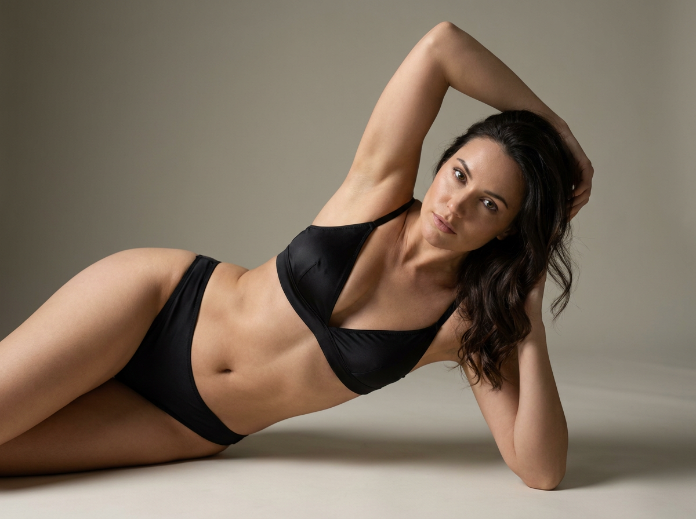
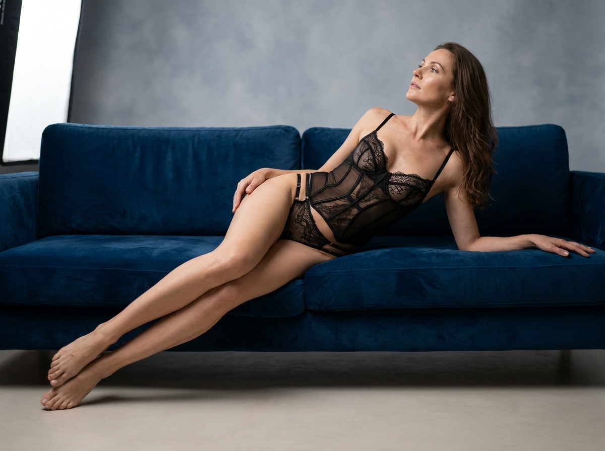
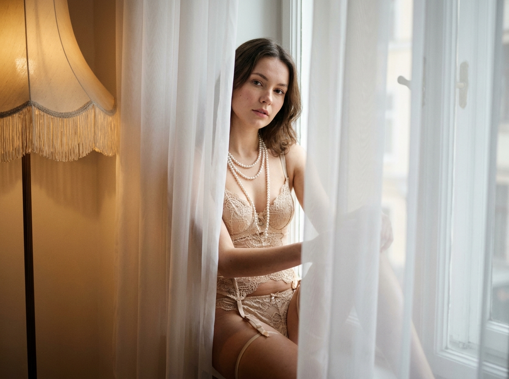
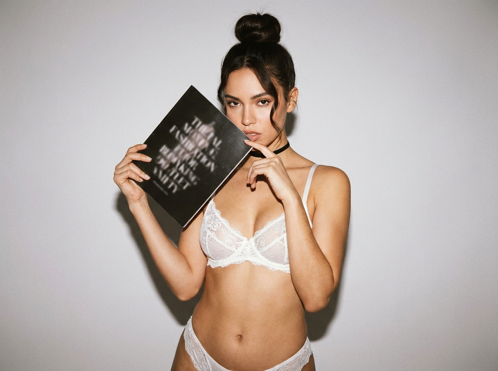
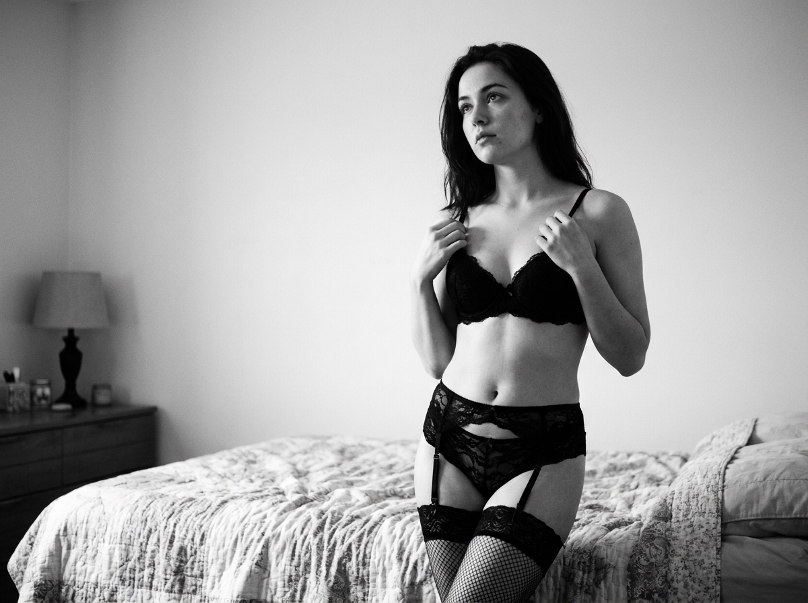

ИИ-фото 18+: 5 промптов для нейросети

Эффектный кадр в бельевом или будуарном стиле трудно получить с первого раза: нейросеть путает анатомию, ломает позу и добавляет лишние детали. Хороший промпт задаёт не только одежду, но и положение тела, направление взгляда, свет, фон и характер съёмки.
В подборке — пять сценариев для взрослых моделей: минималистичная съёмка на полу, графичная поза со стулом, винтажный шкаф, синий бархатный диван и спокойный beauty-кадр на светлом фоне. Все идеи рассчитаны на эстетичный fashion-результат без откровенной эротики.
Как сгенерировать такое фото: пошагово
Нужен снимок анфас при ровном свете, лицо в кадре целиком, без тёмных очков и головных уборов. Разрешение от 1000 пикселей по короткой стороне. Чем чётче исходник, тем точнее модель повторит черты.
Выберите сценарий ниже и нажмите «Копировать» — текст уйдёт в буфер целиком, вместе с командой сохранения внешности. Эта команда стоит первой строкой и отвечает за то, чтобы на выходе было ваше лицо, а не случайное.
Кнопка «Сгенерировать» рядом с каждым промптом открывает модель в новой вкладке. Nano Banana Pro работает с референсом лица — в отличие от моделей, которые генерируют портрет с нуля и узнаваемость теряют.
Промпт — в поле ввода, портрет — через загрузку референса. Порядок значения не имеет, но без референса команда сохранения внешности работать не будет: модели нечего сохранять.
Для сторис и ленты берите 9:16, для превью и обложек — 4:3. Первый результат редко идеален: если поза или свет ушли не туда, поправьте соответствующую часть промпта и запустите заново. Обычно хватает двух-трёх итераций.
5 промптов для генерации
1. S-поза на светлом полу
Строго сохранить внешность по загруженному референсу: черты лица, пропорции, мимику и текстуру кожи без изменений. Фотореалистичный вертикальный fashion-кадр, студия в стиле minimal low-key, тёплая камерная атмосфера. Взрослая модель 18+ лежит на животе и частично на боку, тело образует выразительную динамичную S-линию. Корпус немного развёрнут к объективу, голова повернута в сторону и чуть поднята, взгляд прямо в камеру. Одна рука вытянута над головой, кисть уходит за голову и подчёркивает линию плеч; вторая служит опорой у корпуса или направлена вперёд. Одна нога согнута, другая вытянута с естественным изгибом. На модели лаконичный чёрный комплект белья с тонкими бретелями и деликатными деталями, без откровенной демонстрации тела. Фон — гладкая светлая стена приглушённого бежево-серого оттенка, матовый кремово-песочный пол, вокруг нет мебели и предметов. Мягкий рассеянный свет, натуральная кожа, реалистичная анатомия, чёткие пальцы, объектив 85 мм, f/4, вертикальный формат 4:5, высокая детализация.
2. Графичная поза на стуле

Строго сохранить внешность по загруженному референсу: черты лица, пропорции, мимику и текстуру кожи без изменений. Чистая фотореалистичная студийная fashion-съёмка на белом бесшовном фоне, вертикальная композиция и много воздуха. В центре стоит современный чёрный металлический стул или кресло с открытой решётчатой конструкцией: круглые дуги, вертикальные стойки, выразительный графичный силуэт. Взрослая модель 18+ уложена на сиденье в вытянутой перевёрнутой позе: корпус и ноги лежат на металлической конструкции, голова свешивается вниз справа и находится близко к полу. Распущенные волосы каскадом лежат на поверхности, хорошо видна их естественная текстура. Ноги вытянуты, колени слегка согнуты, на ступнях чёрные туфли на каблуке. Руки направлены вперёд и вниз, пальцы расслаблены. Одежда — элегантный чёрный fashion-комплект с закрытым бельевым кроем, без откровенных деталей. Белый пол с мягкой тенью, равномерный студийный свет, точная анатомия и безопасная устойчивость позы, объектив 50 мм, f/5.6, формат 4:5, ультрадетализация.
3. Винтажный будуар у шкафа

Строго сохранить внешность по загруженному референсу: черты лица, пропорции, мимику и текстуру кожи без изменений. Фотореалистичная editorial-съёмка в эстетике винтажного будуара, вертикальный кадр, мягкий направленный свет и тёплая цветокоррекция. Взрослая модель 18+ стоит у песочно-бежевой стены справа от старинного деревянного шкафа-гардеробной. Шкаф выполнен из тёмного орехового дерева, украшен резьбой и старинной фурнитурой; слева открыты секции с нарядами на плечиках — белые и молочные платья, пышные тюлевые юбки с лёгкими рюшами. Ткани выглядят воздушными и слегка прозрачными, но образ остаётся целомудренным. В верхней части видны декоративные элементы и тёмные детали конструкции. Модель показана в профиль или в три четверти, делает мягкий шаг или плавный поворот, голова обращена влево, выражение спокойное, задумчивое. Наряд — закрытое светлое будуарное платье с фактурной тканью. Натуральная кожа, реалистичные руки, тонкая фактура дерева и текстиля, объектив 85 мм, f/3.2, формат 4:5.
4. Чёрное бельё на бархате

Строго сохранить внешность по загруженному референсу: черты лица, пропорции, мимику и текстуру кожи без изменений. Гламурная фотореалистичная fashion-boudoir съёмка, вертикальный формат, глубокий синий бархатный диван и мягкий студийный свет. Взрослая модель 18+ лежит на боку и частично на животе, корпус немного развёрнут к камере, длинные ноги вытянуты, ступни стоят на полу. Поза образует плавную S-образную линию: голова запрокинута и повернута в сторону, взгляд направлен вверх; одна рука вытянута вдоль дивана вперёд, другая легко опирается на бархат или скользит по его поверхности. На модели чёрный комплект corset lingerie: бюстье-корсет на тонких бретелях, деликатные полупрозрачные кружевные и сетчатые вставки, аккуратные бельевые вырезы без откровенной подачи. Ткань матовая, посадка реалистичная, образ элегантный. Бархат должен иметь заметный ворс и мягкие блики, фон нейтральный, композиция с акцентом на силуэт. Съёмка объективом 85 мм, диафрагма f/2.8, малая глубина резкости, естественная анатомия, пять пальцев на каждой руке, разрешение 2048×2560.
5. Утренний beauty-кадр

Строго сохранить внешность по загруженному референсу: черты лица, пропорции, мимику и текстуру кожи без изменений. Минималистичная фотореалистичная fashion/lingerie-съёмка в светлой студии, вертикальная композиция 4:5, много негативного пространства и спокойная утренняя атмосфера. На молочно-белом или светло-сером бесшовном полу лежит взрослая модель 18+ в динамичной позе с опорой на предплечья: корпус приподнят, одна нога согнута, другая вытянута или мягко полусогнута вдоль поверхности. Голова наклонена вперёд и слегка вбок, лицо развёрнуто к объективу, взгляд уверенный, мягкий, с едва заметной игривостью. Волосы распущенные, объёмные, естественно растрёпанные, несколько прядей частично закрывают лицо. Одежда — элегантный нейтральный комплект белья с аккуратным закрытым кроем, без откровенной демонстрации тела. Свет рассеянный, тени мягкие, цветокоррекция тёпло-нейтральная, без ярких цветов. Реалистичная кожа и волосы, корректная анатомия, объектив 50 мм, f/4, разрешение 2048×2560.
Что важно учесть в этом стиле
Для fashion-кадра 18+ лучше описывать не «сексуальность», а конкретную пластику тела: где опора, куда направлены плечи, как согнута нога и что делает взгляд. Так модель выглядит как часть постановочной съёмки, а не случайный персонаж.
Свет и объектив заметно меняют результат. Для портретной пластики подойдут 85 мм и f/2.8–f/4, для сцены с мебелью — 50 мм и f/5.6. Указывайте вертикальный формат 4:5, мягкую тень, натуральную кожу и реалистичные кисти рук. В запросах с референсом лица лучше отдельно проверять сходство, не жертвуя анатомией позы.
Идеи для вариаций
- Заменить бежевую стену на серо-голубой фон и добавить боковой свет из большого окна.
- Поменять бархатный диван на кресло цвета бордо, сохранив S-образную линию тела.
- Добавить тонкую атласную накидку поверх бельевого комплекта.
- Сделать чёрно-белую версию с жёстким верхним светом и графичными тенями.
- Перенести сцену со шкафом в гостиничную гардеробную с зеркалом в деревянной раме.
Как собрать свой промпт
Сначала задайте формат и жанр: фотореалистичная студийная съёмка, fashion или editorial, вертикальный кадр 4:5. Затем опишите взрослую модель, положение тела, поворот головы, руки, ноги и направление взгляда. Один абзац лучше посвятить локации и мебели, ещё один — одежде и фактурам.
В финале добавьте свет, объектив, диафрагму, цветокоррекцию и ограничения: корректная анатомия, естественные пальцы, отсутствие лишних предметов, никаких надписей. Если используете референс лица, проверьте правила выбранного сервиса и не применяйте изображения человека без его согласия.
Ошибки, из-за которых кадр не получается
- Слишком общая поза. Фраза «красивая поза» не объясняет нейросети, где находятся опорные точки и как построен силуэт.
- Перегруженный фон. Мебель, декор и одежда конкурируют с моделью, если не указать главный объект и свободное пространство.
- Противоречивый свет. Одновременные требования к жёсткому солнцу и мягкому рассеиванию дают неестественные тени.
- Нет негативных ограничений. Добавьте запреты на лишние пальцы, деформированные стопы, текст, логотипы и случайные предметы.
- Чрезмерная ставка на референс. Точное лицо не исправит сломанную анатомию, поэтому сначала добейтесь устойчивой позы, а затем усиливайте сходство.
Частые вопросы
Как сделать такое ИИ-фото бесплатно?
Попробовать можно в Kandinsky и Шедевруме: они подходят для текстовых сцен, но точность сложных поз и бельевых деталей бывает нестабильной. Krea AI и Arena.ai удобны для сравнений разных вариантов, однако доступность функций меняется, а работа с референсом лица ограничена настройками конкретного режима. Используйте только собственные фото или изображения с разрешением владельца и проверяйте правила сервиса для контента 18+.
Как сохранить сходство лица с референсом?
Загрузите чёткий портрет без сильного макияжа, очков и перекрывающих лицо волос. Укажите, что нужно сохранить форму глаз, носа, губ и овал, но не перегружайте запрос десятками повторов. Сначала добейтесь правильной позы, затем повышайте силу влияния референса: слишком высокий параметр часто ломает мимику и пропорции.
Почему нейросеть искажает руки и ноги?
Сложные перевёрнутые позы и конечности вне кадра требуют нескольких попыток. Опишите точки опоры, количество видимых рук и ног, положение коленей и стоп. В негативной части промпта запретите лишние пальцы, сросшиеся кисти, вывернутые суставы и обрезанные конечности. При необходимости сначала сгенерируйте простой вариант, а детали исправьте маскированием.
Можно ли сделать кадр более откровенным?
Лучше усиливать не степень обнажения, а атмосферу: контрастный свет, бархат, дымчатые тени, крупный портретный план и выразительную пластику. Используйте только взрослых персонажей, сохраняйте бельевой или закрытый fashion-образ и учитывайте ограничения выбранной платформы. Реальные интимные фото без согласия человека использовать нельзя.